CS 1111
Introduction to Software Development
GWU Computer Science
Introduction to Software Development
GWU Computer Science
If you do not have your Codio course ready, use any text editor or simple IDE. Some possibilities are:
Before we move forward, let's catch up (complete any remaining work from the previous module)
In this case, make sure we've got:
We'll start by writing a program to print a little
number triangle like this:
1
22
333
4444
Notice: there's repetition across a row of numbers: a potential use of for-loops!
Here's the program, using for-loops:

Observe:
Next, observe that the upper-limits of the for-loops are themselves increasing:

Another way to say this:
When the value is 2, print a row of 2's
When the value is 3, print a row of 3's
When the value is 4, print a row of 4's
Thus, we could try to do is:
for (int j=2; j<=4; j++) {
// Print a row of j's (j of them)
}
But we already know how to print a row of j's:
for (int j=2; j<=4; j++) {
// Print a row of j's (j of them)
for (int i=0; i<j; i++) {
System.out.print (j)
}
}
The complete program:

Activity 3: Change the program to print a fifth row with five 5's. Also include the row of 1's inside the loop: that is, fix the for-loop conditions so that you don't need the stand-alone println to print 1. Write your code in ForLoopPrint2.java
Let's review what we learned above:
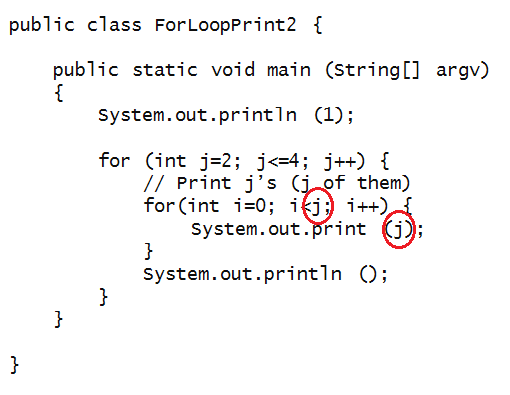
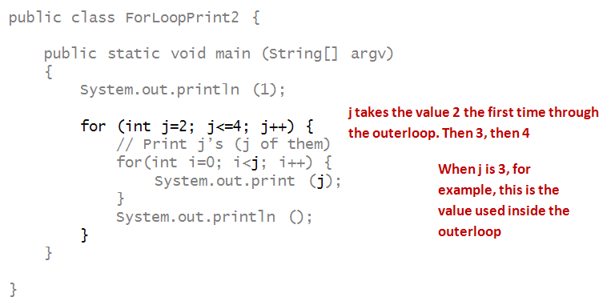
At first this will appear tedious, but it is critical to firm understanding of how programs execute, and eventually to your own writing of programs.
We'll first do a longer, more narrative version here, and then show you how to submit a much shorter version for your exercises.
For our example, let's look at the program we last saw:
public class ForLoopPrint2 {
public static void main (String[] argv)
{
System.out.println (1);
for (int j=2; j<=4; j++) {
for (int i=0; i<j; i++) {
System.out.print (j);
}
System.out.println();
}
}
}
Here's the longer version, just for the sake of understanding.
To make best use of this:
Ready? Let's trace through:
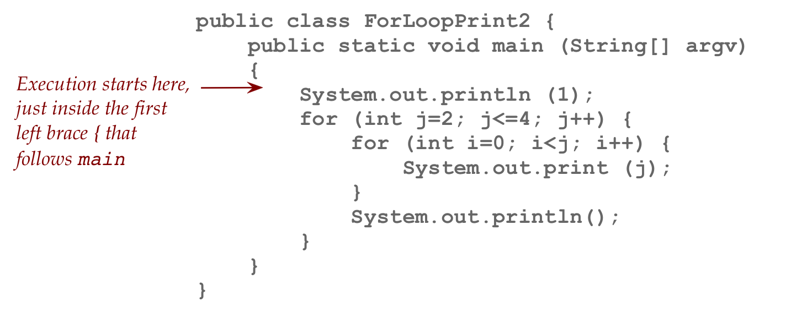
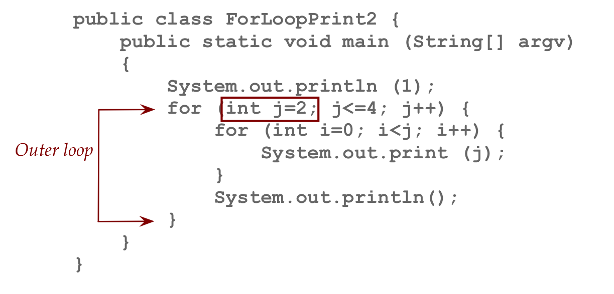
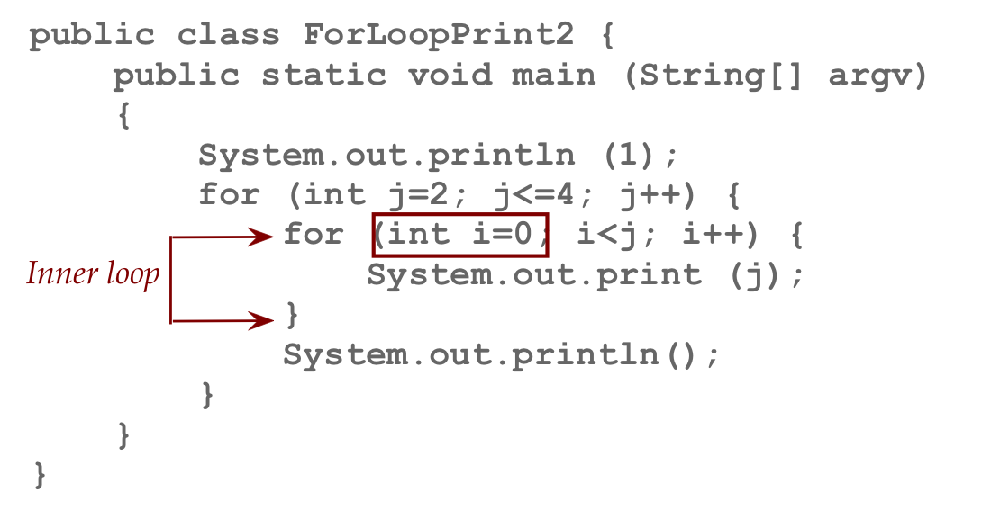
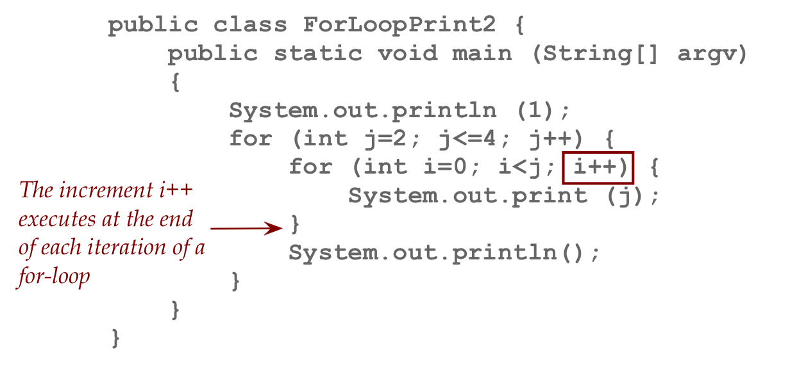
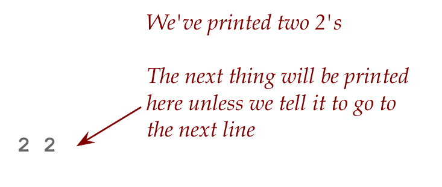
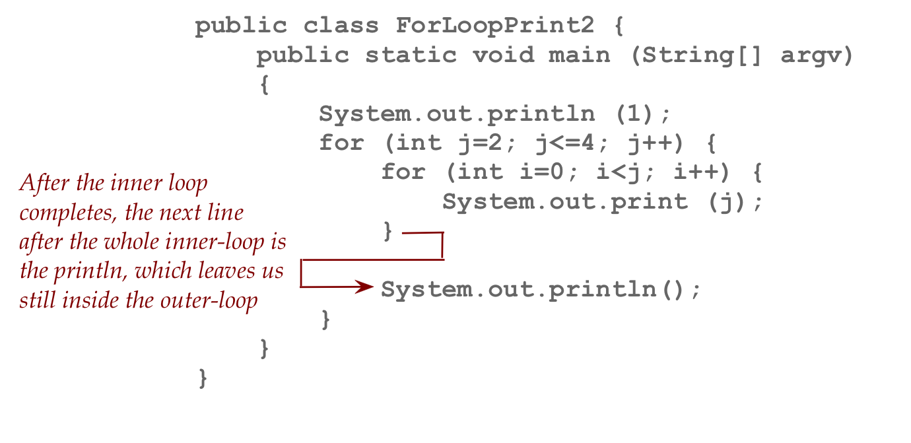
This simply causes the output to go to the next line without printing any actual thing.
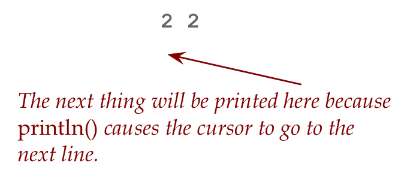
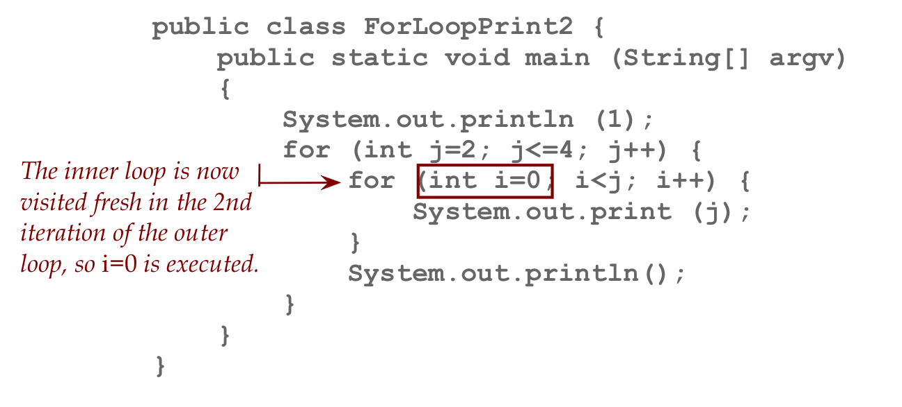
1 22 333
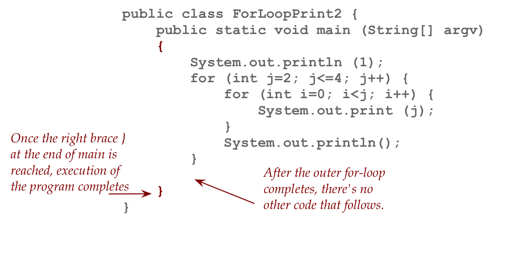
1 22 333 4444
We will use a simple table to keep track of values as they are changed throughout the program. An example is shown for the previous tracing exercise:
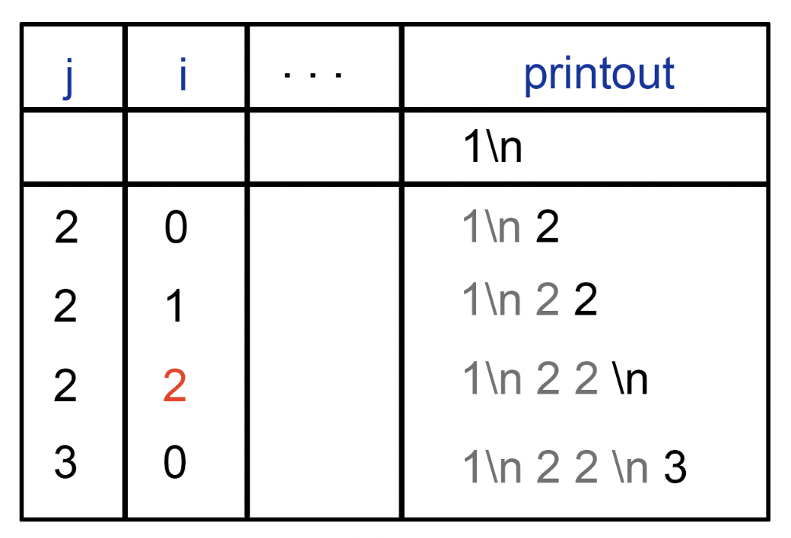
Note that the 2 is only "alive" between the last increment and the time the test fails (i<j). It is there just to highlight the end. In reality as soon as we leave the inner loop, i is no longer "alive" and so, the printing of the newline \n happens when i does not exist anymore.
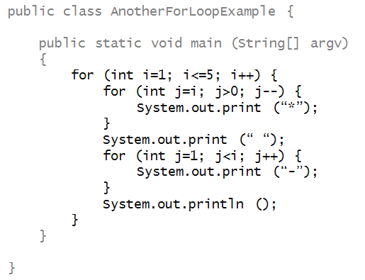
First, trace through the values of i and j by hand
and try to figure out what gets printed. Do this painstakingly
for each possible value of i and j.
Use the shorter "table" format we just explained.
Then, edit, compile and
execute the above program to see if you were right.
Activity 5:
Write a program to print out consecutive integers in a diagonal,
as in
1
2
3
4
5
Use a nested for-loop as in earlier examples to print the
requisite number of spaces before printing a digit.
Write your code in
DiagonalForLoopPrint.java
Activity 6:
Write a program to print out
I'm feeling cold: b rrrrrr rrrrr rrrr rrr rr r
Use a regular print
to print everything up to the b.
Then, use a nested for-loop the r's.
Don't forget the space between each grouping of
r's.
Write your code in
ColdForLoopPrint.java
Let's consider how to read a single for-loop, such as:

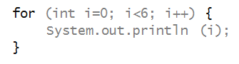
Note: like the class but unlike methods, the opening brace is on the same line as the for.
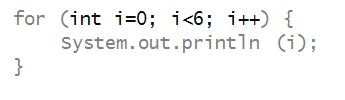
Say to yourself
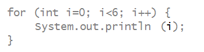
Writing:
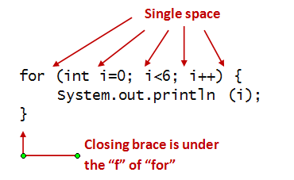

What does it print? Try to figure this out by mental execution first. Then, type it up, compile and execute to confirm, writing your code in MyForExercise.java.
As code gets more complex, it gets easier to make mistakes, and harder to find them.
In each of the programs below, try to determine
the error without compiling the program. Then,
write up the program, compile and see what the
compiler says. After that, fix the error.
Activity 8:
Find the errors!
Program 1:
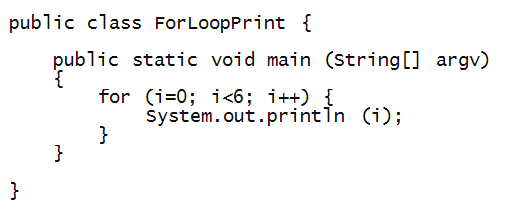
Write your (corrected) code in
Program 2:

Write your corrected code in
Program 3:

Write your corrected code in
Program 4:
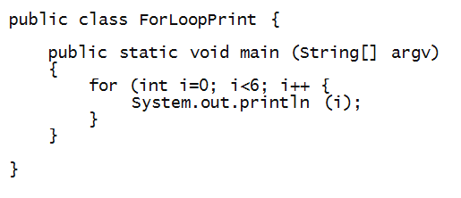
Write your corrected code in
Program 5:
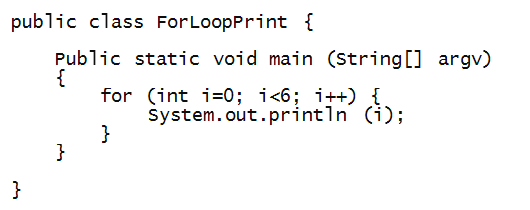
Write your corrected code in
Program 6:

Write your corrected code in
The last one is technically not a syntax error but a logical error:
1 22 333 4444But there are two bugs. First, try to find the problems solely by reading and mental execution.
55555
4444
333
22
1
However, there are two bugs. Can you see them just by reading?
Find and fix them, writing your code in
ForLoopPrintDown.java.
The program:
public class ForLoopPrintDown {
public static void main (String[] argv)
{
for (int i=5; i>=1; i--) {
for (int j=1; j<i; j++); {
System.out.print (i);
}
System.out.println ();
}
}
}
This module was a bit different, a little more challenging than modules 1-3.
What to keep in mind: